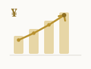
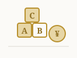
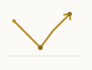
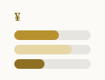

ふるさと納税、地方移住者はどう使う？年間12万円分の実践記録
世帯年収1,650万円、ふるさと納税の年間寄付上限は約28万円。金沢移住3年目の実際の寄付先・返礼品・還元率を数字で公開する。

移住・お金とFIRE・仕事やブログ運営・金沢での暮らし。自由とつながりを大切にする、 等身大のFIRE生活を実体験をもとに記録していきます。
該当する記事が見つかりませんでした。
世帯年収1,650万円、ふるさと納税の年間寄付上限は約28万円。金沢移住3年目の実際の寄付先・返礼品・還元率を数字で公開する。

地方移住3年、世帯資産は4,200万円から5,800万円台まで増えた。インデックス投資の積立実績とFIRE目標6,000万円までの推移を数字で公開する。
金沢移住×フルリモート歴3年、複業歴1年で月4.2万円の副収入。地方移住者ならではの複業の始め方と時間配分を実額で公開する。

未就学児を育てる我が家の金沢での子育て月間支出は約4万円。東京時代との比較、保育料や医療費助成の自治体差を数字で整理する。

半導体株急落・日経急落のたびに考える、積立を止めない理由。資産5,800万円台・S&P500 50%の実際の判断基準を記録する。
地方移住3年、FP相談を使わずインデックス投資（S&P500 50%・NASDAQ100 30%・新興国株20%）を自分で判断してきた理由と根拠を整理する。
在宅環境に自己負担で投資した合計19.6万円の内訳を公開。チェア8.8万円・昇降デスク4.2万円など、費用対効果を数字で検証する。
東京から金沢への移住でかかった費用は合計50万円。引っ越し業者15万円、初期費用20万円、雪国装備費7万円など、実額を項目別に公開する。
楽天証券をメイン、SBI証券をサブとして併用している理由を、地方移住・リモートワーカーならではの視点から具体的に整理する。
移住して3年、時間をかけて地元の人とのつながりを作るために実際にやったことをまとめる。
移住3年、3回の冬を経験して分かった金沢の雪国生活のリアルと、年々効率化してきた冬支度をまとめる。

金沢での月間生活費は合計30万円。住居費8万円・食費7万円など内訳を円グラフで公開し、東京時代の43万円と比較する。
ブログ開設1ヶ月の実際の数字と、そこから見えてきた課題・次の一手を記録する。
IT業界でフルリモートを実現するために実際に取り組んだ、リモートワークの仕事の探し方・続け方についてまとめる。
移住を機に見直した固定費の内訳と、実際にどこまで削れたのかを数字ベースでまとめる。
S&P500 50%・NASDAQ100 30%・新興国株20%で組む、地方移住後のインデックス積立ポートフォリオを公開する。
東京の家賃20万円から金沢の8万円へ。3年住んで分かった家賃相場と物件選びのポイントをまとめる。
金沢移住を決めた3つの理由と、移住前の下見で実際にやってよかったことをまとめる。
資産形成だけでは辿り着けない。何歳でどれくらいの裁量を持ちたいかを先に決め、そこから今の働き方・転職の軸を逆算して考えた。